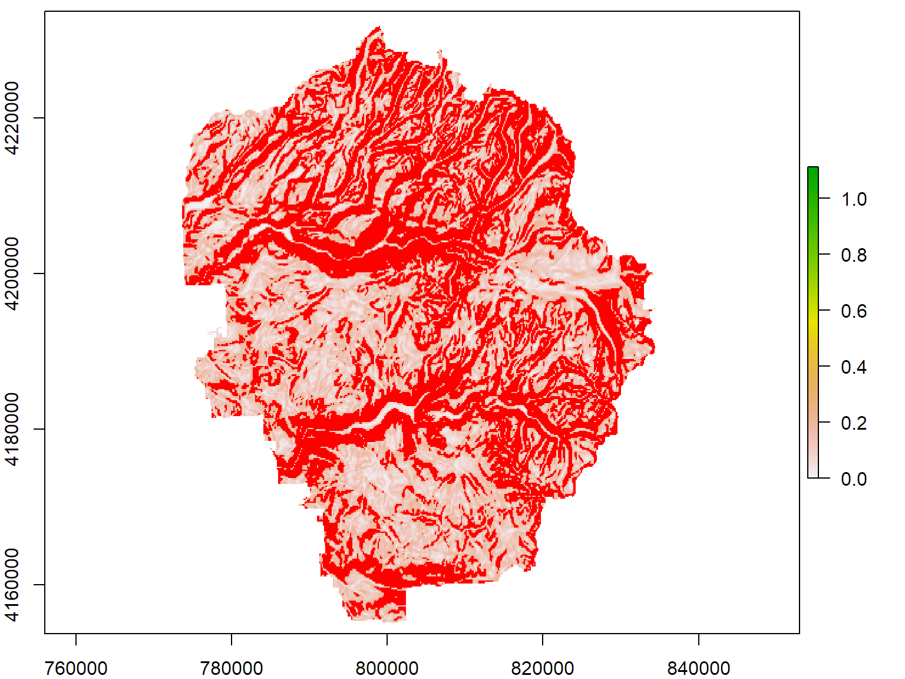

Week 3:
Spatial Data Analysis with R
May 10, 2018
Raster Data Pt 2: Derived Surfaces
Working with Pixel Values
First we bring in the elevation data we made last time.
load("~/yosemite_bnd.RData") # yosem_bnd_prj
load("~/yosemite_dem.RData") # yosem_msk_dem_prj
plot(yosem_msk_dem_prj, asp=1)
plot(yosem_bnd_prj, add=TRUE, lwd=2)

There are couple of ways to get pixel values:
myrast[rows,cols]
getValues() - returns all pixel values as a vector (useful for global operations)
Example: identify steep slopes in Yosemite
yosem_slope <- raster("~/yosemite_slope.tif")
all_slope_vals <- getValues(yosem_slope)
## Slope is computed in radians. To show degrees, multiply by 180.
hist(all_slope_vals * 180, xlab="slope (degrees)", col="grey80", main="Yosemite Slope Distribution")
Let's make a mask of high slope values, where we define steep slopes as > 40 degrees.
## Create a blank copy of yosem_slope
yosem_slope_steep <- raster(yosem_slope)
hasValues(yosem_slope_steep)
## [1] FALSE
threshhold_deg <- 40
yosem_slope_steep[yosem_slope > (threshhold_deg / 180)] <- 1
yosem_slope_steep
## class : RasterLayer
## dimensions : 432, 439, 189648 (nrow, ncol, ncell)
## resolution : 146.8, 185 (x, y)
## extent : 772280.7, 836725.9, 4153773, 4233693 (xmin, xmax, ymin, ymax)
## coord. ref. : +proj=utm +zone=10 +ellps=WGS84 +units=m +no_defs
## data source : in memory
## names : layer
## values : 1, 1 (min, max)
summary(yosem_slope_steep)
## layer
## Min. 1
## 1st Qu. 1
## Median 1
## 3rd Qu. 1
## Max. 1
## NA's 138246
plot(yosem_slope)
plot(yosem_slope_steep, col="red", add=TRUE, legend=FALSE)

Rastering Vector Data
To do analysis, we often have to convert vector features to raster format.
Syntax: rasterize(spgeom, rast, field)
yosem_pts_rst <- rasterize(yosem_pts, yosem_slope, field=1)
x <- getValues(yosem_pts_rst)
table(x)
## x
## 1
## 20
Create a distance surface
yosem_dist2pts <- distance(yosem_pts_rst)
plot(yosem_dist2pts, main="Distance to Random Points", asp=1)
plot(yosem_bnd_prj, add=TRUE, lwd=2)

Creating a Mask
In prepation for raster algebra (below), we often turn a derived raster surface into a Mask where all pixels are either 1 where a condition is met, or 0 (or NA) where a condition is not met.
The process for turning a continous raster into a mask is generally.
- use the raster() function to create a new, blank, raster without any pixel values using the input raster as the template
- change the pixels where the condition is met from NA to 1
Example 1: Create a raster mask of areas within 1 mile (1610 meters) of the Yosemite sample points. All pixels should be NA except for those that meet the criteria which should be 1.
pts_close_rst <- raster(yosem_dist2pts)
dist_vals <- getValues(yosem_dist2pts)
pts_close_rst[ dist_vals < 1609.34 ] <- 1
plot(pts_close_rst, col="red", asp=1, main="Distance Mask", legend=FALSE)
plot(yosem_bnd_prj, add=TRUE, lwd=2)
Bonus: create the distance mask using a buffer
Example 2: Create a raster mask of areas whose slope <20 degrees.
flat_areas_rst <- raster(yosem_slope)
flat_areas_rst[getValues(yosem_slope) < (20/180)] <- 1
plot(flat_areas_rst, col="red", asp=1, main="Flat Area Mask", legend=FALSE)
plot(yosem_bnd_prj, add=TRUE, lwd=2)
Raster Algebra
Raster algebra (aka raster calculator, map algebra) is where you add, subtract, multiply, etc. two or more rasters together, as though they were numbers.
We can use raster algebra for siting analyses that aim to find the locations that meet multiple criteria.
- The rasters should have the same extent, pixel size, and CRS
- The operation is evaluated on a pixel-by-pixel basis
- Generally all math operations (+ - * /) with a NA value will return NA
Syntax: rast1 + rast2 - rast3 * rast4 / rast5
Example: Find all locations in Yosemite that are a) within 1 mile of our sample points, and b) on slopes < 20 degrees.
best_locations <- flat_areas_rst * pts_close_rst
image(best_locations, col="red", asp=1)
plot(yosem_bnd_prj, add=TRUE, lwd=2)
Notes
In this example, we multiplied the two masks together because the rules specified that both conditions were required. An altnernative approach could be to add raster masks together so that the pixel values in the output reflect a ranking based on the number of criteria satisfied.
For large datasets and/or more complex combinations, the overlay() function may have better performance.